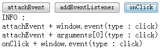
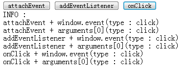
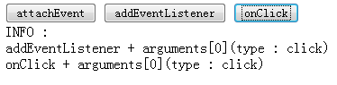

SD9011: 事件模型在各浏览器中存在差异
标准参考
根据 W3C DOM 2 Events 描述，EventTarget 接口被所有支持 DOM 事件模型的节点（Node）实现。 该接口提供了 'addEventListener' 和 'removeEventListener' 方法，用来绑定或解绑一个 EventListeners 接口到一个 EventTarget。
DOM 2 Events 中定义了 Event 接口，用来提供事件的上下文信息，它提供了若干标准属性和方法。 实现 Event 接口的对象一般作为第一个参数传入事件处理函数，以用来提供当前事件相关的一些信息。
DOM 2 事件模型允许 DOM 实现支持事件的多模块，如果有必要，事件模型允许附加新的事件模块。 为了共同使用性的目的，DOM 会定义一个包含低级别的，依赖设备的事件模块、一个 UI 逻辑事件模块和一个文档变化事件模块的 UI 事件模块。 第三方实现（比如浏览器厂商）在定义一个新类型事件的时候，事件名称一定不能使用大小写无关的 'DOM' 字符串作开头，该前缀是为未来的 DOM 事件模块保留的。
DOM 2 已经定义了一个 UI 事件类型模块和一个鼠标事件类型的模块，它们分别对应 UIEvent 和 MouseEvent 接口。 这两个接口提供了若干标准属性和方法，以获知事件发生时的一些信息。
关于 EventTarget 接口的详细信息，请参考 DOM 2 Events 1.3. Event listener registration。
关于 Event 接口的详细信息，请参考 DOM 2 Events 1.4. Event interface。
关于事件模块的详细信息，请参考 DOM 2 Events 1.6. Event module definitions。
问题描述
各浏览器对元素绑定、解绑事件监听器的方法，事件对象的获取，以及 Event 对象的实现上存在差异。
造成的影响
如果使用某浏览器特有的事件相关的属性及方法编写代码，则可能造成兼容性问题，导致代码报错，功能失效。
受影响的浏览器
| 所有浏览器 |
|---|
问题分析
1. 只有 IE Opera 支持使用 'attachEvent' 和 'detachEvent' 方法绑定和解绑事件监听器
根据 DOM 2 Events 中描述，节点使用 'addEventListener' 和 'removeEventListener' 方法绑定和解绑事件监听器，但 IE6 IE7 IE8 不支持这两个方法， 而使用 'attachEvent' 和 'detachEvent' 方法作为替代方案，Opera 两类方法都支持。Chrome Safari Firefox 只支持标准方法。
分析以下代码：
<button id="add" type="button">add event listener test</button>
<button id="remove" type="button">remove event listener test</button>
<div id="info"></div>
<script type="text/javascript">
var add = document.getElementById("add"),
remove = document.getElementById("remove"),
showMsgA = function(){showMsg("attachEvent")},
showMsgB = function(){showMsg("addEventListener")};
if(add.attachEvent){
add.attachEvent("onclick",showMsgA);
remove.attachEvent("onclick",removeE);
}
if(add.addEventListener){
add.addEventListener("click",showMsgB,false);
remove.addEventListener("click",removeE,false);
}
function removeE(){
if(add.detachEvent){
add.detachEvent("onclick",showMsgA);
showMsg("detachEvent");
}
if(add.removeEventListener){
add.removeEventListener("click",showMsgB,false);
showMsg("removeEventListener");
}
}
function showMsg(method){
document.getElementById("info").innerHTML += ("support " + method + "<br />");
}
</script>
依次点击 'add event listener test' >> 'remove event listener test' >> 'add event listener test'，测试各浏览器对这些方法的支持，结果如下：
| IE6 IE7 IE8 |  |
|---|---|
| Opera |  |
| Chrome Safari Firefox |  |
关于 'addEventListener' 和 'attachEvent' 有几点需要注意：
- IE 不支持在捕获阶段触发事件监听器，'attachEvent' 方法没有提供参数说明是否响应在捕获阶段触发的事件；
- 'addEventListener' 和 'attachEvent' 都可以注册多个事件监听器；
- 在 Firefox Chrome Safari Opera 中给同一事件注册同一个事件监听器多次，重复注册的会被丢弃；而在 IE 中重复注册的事件监听器会被重复执行多次；
- 当给同一元素注册了多个事件监听器的时候，IE6 IE7 的事件监听器执行顺序是随机的，IE8 是倒序的，Firefox Chrome Safari Opera 是顺序的；
- 当元素注册的事件监听器中有非法的事件监听器时（非函数），在 IE Firefox 中会抛出异常，而在 Chrome Safari Opera 中则会忽略非法的事件监听器，继续执行其他的事件监听器。
2. 各浏览器获取事件对象的差异
DOM 2 Events 中规定使用事件监听器的第一个参数作为事件对象，而 IE Opera Chrome Safari 还支持通过 window.event 获取事件对象。
分析以下代码：
<button type="button" id="attach">attachEvent</button>
<button type="button" id="addE">addEventListener</button>
<button type="button" id="byclick">onClick</button>
<br />
INFO :
<div id="info"></div>
<script type="text/javascript">
function $(id){return document.getElementById(id);}
var attach = $("attach"),
addE = $("addE"),
byClick = $("byclick");
attach.attachEvent && attach.attachEvent("onclick", handler);
addE.addEventListener && addE.addEventListener("click", handler, false);
byClick.onclick = handler;
function handler(){
var src = window === this ? window.event.srcElement : this, type = src.innerHTML;
window.event && showMsg(window.event.type, type + " + window.event");
arguments[0] && showMsg(arguments[0].type, type + " + arguments[0]");
}
function showMsg(type, msg){
$("info").innerHTML += (msg + "(type : " + type + ")<br />");
}
</script>
以上代码组合不同的事件监听器绑定方式和事件对象获取方法，测试各浏览器的支持程度。
依次点击 'attachEvent' >> 'addEventListener' >> 'onClick'，结果如下：
| IE6 IE7 IE8 |  |
|---|---|
| Chrome Safari |  |
| Opera |  |
| Firefox |  |
汇总测试结果如下表：1
| 事件对象获取方式 | IE6 IE7 IE8 | Chrome Safari | Opera | Firefox |
|---|---|---|---|---|
| window.event | Y | Y | Y | N |
| arguments[0] | Y2 | Y | Y | Y |
注1： Y 表示支持该事件对象获取方式，N 表示不支持。
注2： 部分支持。
从上表出可以看出：
- 只有在使用 attachEvent 方法注册事件监听器的时候，IE 才支持使用事件监听器传入的第一个参数作为事件对象的方式；
- Chrome Safari Opera 两种获取事件对象的方式都支持；
- Firefox 只支持获取事件对象的标准方式。
3. 各浏览器中事件对象的属性和方法的差异
IE 对事件对象的标准属性和方法支持有限，针对大部分属性和方法，IE 都提供了一套替代非标准的替代方案； 而 Firefox Chrome Safari Opera 除了全面支持事件对象的标准属性和方法外，还在不同程度上支持了 IE 提供的非标准替代方案。
以下代码检测了 Event、UIEvent、MouseEvent 接口以及事件对象的非标准属性在各浏览器下的支持程度：
<button type="button" id="iEvent">Interface Event</button>
<button type="button" id="iUIMouse">Interface UIEvent & MouseEvent</button>
<input type="text" id="nosK" />
<p id="wrap" style="border:3px solid;padding:5px;width:500px;"><a id="nosCM" href="#"><img src="google.gif" alt="IE"/></a></p>
<br />
<table border="1">
<tbody>
<tr>
<th>Interface Event</th>
<td id="einfo"></td>
</tr>
<tr>
<th>Interface UIEvent<br/>&<br/>MouseEvent</th>
<td id="minfo"></td>
</tr>
<tr>
<th>Non-standard<br/>&<br/>click</th>
<td id="ncinfo"></td>
</tr>
<tr>
<th>Non-standard<br/>&<br/>mouseover mouseout</th>
<td id="nminfo"></td>
</tr>
<tr>
<th>Non-standard<br/>&<br/>keyCode</th>
<td id="nkinfo"></td>
</tr>
</tbody>
</table>
<script type="text/javascript">
function $(id){return document.getElementById(id);}
function addEvent(elem, type, handler, useCapture){
elem.addEventListener ? elem.addEventListener(type, handler, useCapture) :
elem.attachEvent("on" + type, handler);
}
addEvent($("iEvent"), "click", handleEvent, false);
addEvent($("iUIMouse"), "click", handleUIMouse, false);
addEvent($("nosCM"), "click", handleNoSClick, false);
addEvent($("wrap"), "click", function(){alert("P tag.");}, false);
addEvent($("nosCM"), "mouseover", handldNoSMouse, false);
addEvent($("nosCM"), "mouseout", handldNoSMouse, false);
addEvent($("nosK"), "keydown", handleNoSKey, false);
addEvent($("nosK"), "keypress", handleNoSKey, false);
addEvent($("nosK"), "keyup", handleNoSKey, false);
function handleEvent(e){
e = e || window.event;
var props = {
type : "type",
target : "target",
currentTarget : "currentTarget",
eventPhase : "eventPhase",
bubbles : "bubbles",
cancelable : "cancelable",
timeStamp : "timeStamp",
initEvent : "initEvent",
preventDefault : "preventDefault",
stopPropagation : "stopPropagation"
};
showMsg(props, e, $("einfo"));
}
function handleUIMouse(e){
e = e || window.event;
var props = {
view : "view",
detail : "detail",
initUIEvent : "initUIEvent",
screenX: "screenX",
screenY : "screenY",
clientX : "clientX",
clientY : "clientY",
ctrlKey : "ctrlKey",
shiftKey : "shiftKey",
altKey : "altKey",
metaKey : "metaKey",
button : "button",
relatedTarget : "relatedTarget",
initMouseEvent : "initMouseEvent"
}
showMsg(props, e, $("minfo"));
}
function handleNoSClick(e){
e = e || window.event;
e.returnValue = false;
e.cancelBubble = true;
var props = {
cancelBubble : "cancelBubble",
offsetX : "offsetX",
offsetY : "offsetY",
returnValue : "returnValue",
srcElement : "srcElement",
x : "x",
y : "y"
};
showMsg(props, e, $("ncinfo"));
}
function handldNoSMouse(e){
e = e || window.event;
var props = {
fromElement : "fromElement",
toElement : "toElement"
};
showMsg(props, e, $("nminfo"));
}
function handleNoSKey(e){
e = e || window.event;
$("nkinfo").innerHTML += "<strong>" + e.type + "</strong> : " + e.keyCode + "<br/>";
}
function showMsg(props, e, info){
var tmp = "", p, val;
with(e){
for(p in props) {
try{
val = eval(props[p]) + " [" + typeof eval(props[p]) + "]";
} catch (e) {
val = undefined;
}
tmp += "<strong>" + p + "</strong> : " + val + "<br />"
}
}
info.innerHTML = tmp;
}
</script>
执行以上测试代码，分别点击 'Interface Event' 按钮、'Interface UIEvent & MouseEvent' 按钮和图片，鼠标移到图片上再移开，在文本框中输入 'a'，得到结果整理如下表：3
| Interface & Non-standard | Property & method | IE6 IE7 IE8 | Chrome Safari Opera | Firefox |
|---|---|---|---|---|
| Interface Event | type | Y | Y | Y |
| target | N | Y | Y | |
| currentTarget | N | Y | Y | |
| eventPhase | N | Y | Y | |
| bubbles | N | Y | Y | |
| cancelable | N | Y | Y | |
| timeStamp | N | Y | Y | |
| initEvent | N | Y | Y | |
| preventDefault | N | Y | Y | |
| stopPropagation | N | Y | Y | |
| Interface UIEvent | view | N | Y | Y |
| detail | N | Y | Y | |
| initUIEvent | N | Y | Y | |
| Interface MouseEvent | screenX | Y | Y | Y |
| screenY | Y | Y | Y | |
| clientX | Y | Y | Y | |
| clientY | Y | Y | Y | |
| ctrlKey | Y | Y | Y | |
| shiftKey | Y | Y | Y | |
| altKey | Y | Y | Y | |
| metaKey | N | Y | Y | |
| button | Y | Y | Y | |
| relatedTarget | N | Y | Y | |
| initMouseEvent | N | Y | Y | |
| Non-standard | cancelBubble | Y | Y | Y |
| offsetX | Y | Y | N | |
| offsetY | Y | Y | N | |
| returnValue | Y | Y | N | |
| srcElement | Y | Y | N | |
| x | Y | Y | N | |
| y | Y | Y | N | |
| fromElement | Y | Y | N | |
| toElement | Y | Y | N | |
| keyCode | Y | Y | Y |
注3： Y 代表事件对象支持该属性或方法，N 代表不支持。
从上表中可以看出：
- IE 支持事件对象的所有非标准属性，不支持除 'type' 外 Event 接口的所有方法属性及方法，不支持 UIEvent 接口的所有属性和方法，不支持 MouseEvent 接口的 'metaKey'、'relatedTarget' 属性和 'initMouseEvent' 方法；
- Chrome Safari Opera 支持事件对象的所有标准及非标准的属性和方法；
- Firefox 支持事件对象的所有标准属性和方法，但仅支持非标准属性中的 'cancelBubble' 和 'keyCode'。
需要注意的是：
- Firefox 不支持事件对象的 'returnValue' 属性，测试样例中虽然显示 'returnValue' 值为 false，但这仅仅是因为给事件对象添加了 'returnValue' 属性，并没有起到取消事件默认动作的作用，这从地址栏可以看出，多了 '#' 号，这是 A 标签的 'href' 属性造成的。
- 各浏览器对 Event 接口的 'timeStamp' 属性返回值都不同。
关于 IE 实现的事件对象非标准的属性及方法的详细信息，请参考 MSDN event Object。
关于 Firefox 对事件对象实现的详细信息，请参考 MDC event。
解决方案
1. 使用特性判断创建无兼容性问题的事件监听器绑定和解绑函数
如：
function addEvent(elem, type, handler, useCapture){
elem.addEventListener ? elem.addEventListener(type, handler, useCapture) :
elem.attachEvent("on" + type, handler);
}
function removeEvent(elem, type, handler, useCapture){
elem.removeEventListener ? elem.removeEventListener(type, handler, useCapture) :
elem.detachEvent("on" + type, handler);
}
2. 使用特性判断获得有效的事件对象
在事件监听器中判断传入的第一个参数或 window.event 是否有效，如：
function handler(e){
e = e || window.event;
}
3. 使用特性判断使用与标准对应的非标准方法及属性
尽管 IE 对事件对象的标准属性和方法支持有限，但它自己实现的事件模型也基本能够替代或实现标准属性或方法的功能。
下表总结了部分与标准事件对象对应的，或可以实现标准属性或方法功能的非标准属性：
| Standard | Non-standard |
|---|---|
| target | srcElement |
| preventDefault() | returnValue |
| stopPropagation() | cancelBubble |
| relatedTarget | fromElement toElement |
另，标准的 'clientX' 属性和非标准的 'x' 属性作用是相同的，同样 'clientY' 和 'y' 也是。
参见
知识库
相关问题
测试环境
| 操作系统版本: | Windows 7 Ultimate build 7600 |
|---|---|
| 浏览器版本: |
IE6 IE7 IE8 Firefox 3.6.8 Chrome 6.0.490.1 dev Safari 5.0.1(7533.17.8) Opera 10.61 |
| 测试页面: |
AddRemoveEventListener.html getEventObject.html EventObject.html |
| 本文更新时间: | 2010-08-17 |
关键字
Event UIEvent MouseEvent addEventListener removeEventListener attachEvent detachEvent window.event 事件模型